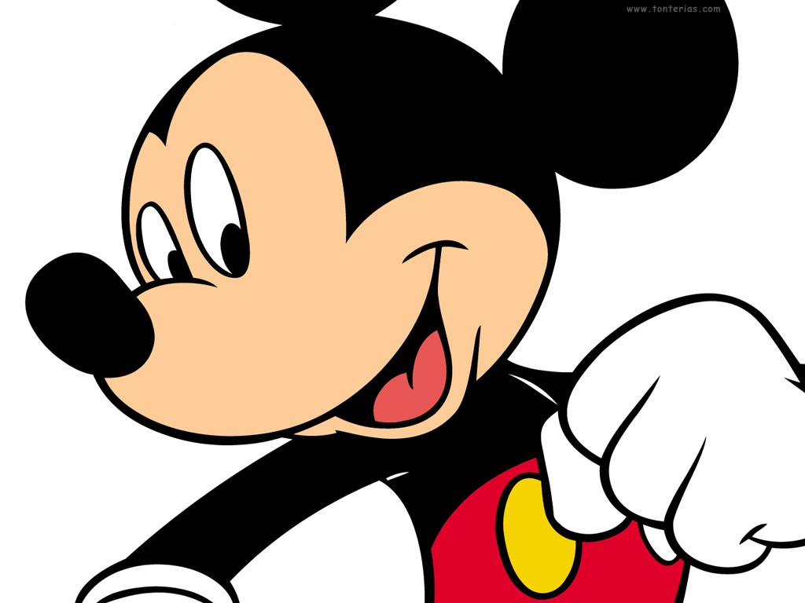
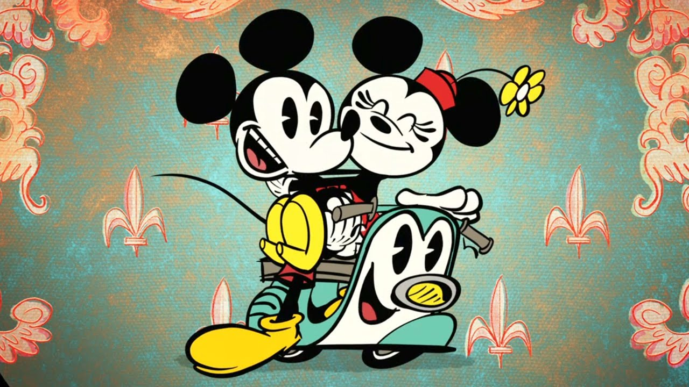
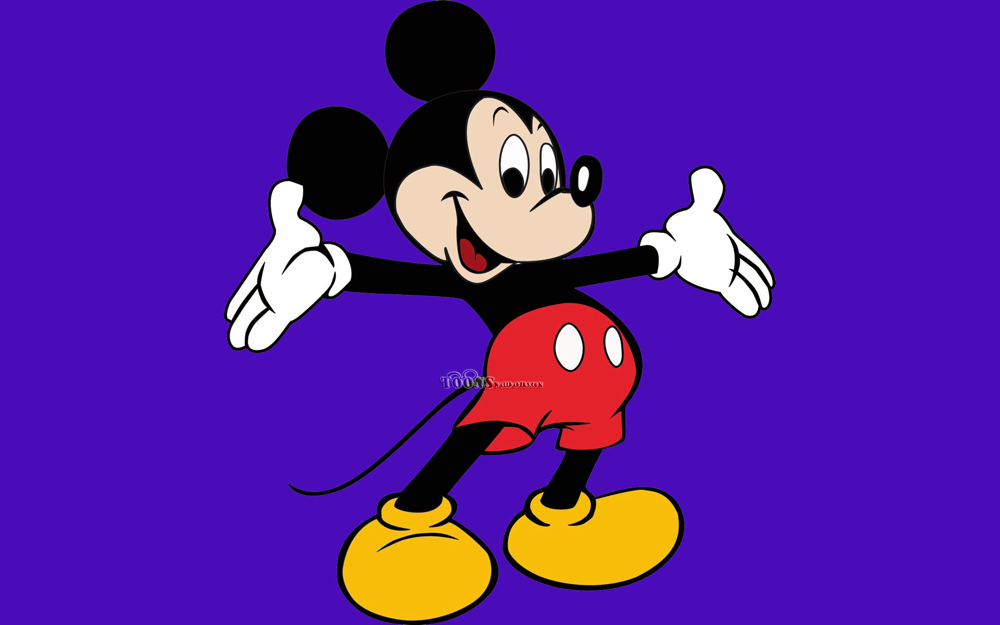

Mickey Mouse movie history



the most famous mouse in the world
the most famous mouse in the world
Steamboat Willie (1928)
The first time we ever saw Mickey Mouse in a theatrical film, he was dressed as a deckhand and causing mischief to a certain Captain Pete. Besides being the public’s introduction to Mickey, this is also notable for being the first cartoon with synchronized sound!
The Band Concert (1935)
The first time we saw Mickey animated in color, we were literally in for a whirlwind of visual delight during this concert run amok thanks to a cyclone. Besides being significant to Mickey’s animated history, this short is also notable for inspiring Silly Symphony Swings at Disney California Adventure.
Lonesome Ghosts (1937)
“I ain’t a scared of no ghosts!” claims Goofy, but we’re not so sure. Mickey, Donald, and Goofy, known collectively as the “Ajax Ghost Exterminators,” are called on to get rid of some ghosts from a haunted house—but little do they know that the call was made by the ghosts themselves. Featuring silly scares and hilarious haunts, this film as a classic Halloween staple for Disney fans.
Society Dog Show (1939)
Mickey’s best pal Pluto is already a prizewinner in our hearts, but will he stand up to the competition at a real dog show? If you’ve got a dog in your life, you can relate to Mickey and Pluto’s silly adventures at the dog show—which manage to feature everything from perilous dangers to romantic rescues.
Fantasia (1940)
Possibly one of Mickey’s most iconic appearances ever, “The Sorcerer’s Apprentice” sequence in Fantasia features Mickey as an ambitious aspiring magic-maker—but when he’s left to do magic on his own, he ends up in over his head. Mickey’s sorcerer outfit has become one of his most famous costumes ever, and the sequence itself went on to inspire Fantasmic! at Disney parks around the world.
Fun and Fancy Free (1947)
Mickey, Donald, and Goofy are in for more fantastic hijinks in this retelling of the fairy tale of Jack and the Beanstalk. During the “Mickey and the Beanstalk” sequence, join Mickey, Donald, and Goofy on a giant adventure to rescue a singing harp and restore happiness to Happy Valley.
Christmas Carol (1983)
Disney-fied retelling of the Charles Dickens tale casts Mickey Mouse as Bob Cratchit against (who else?) Scrooge McDuck as Ebenezer Scrooge. Featuring a cast of Disney characters rarely seen all together, this Christmas story is beloved by Disney fans for touching our hearts and ringing in the holiday spirit.
The Prince and The Pauper (1990)
We’re seeing double in this take on a classic fairy tale! Mickey plays both a spoiled prince and a struggling peasant who decide to switch lives—and hijinks ensue as they try to adapt to their new lives.
Three Musketeers (2004)
Our favorite trio of troublemakers take on the role of the Three Musketeers, faced with the dastardly plot of Peg-Leg Pete, who is determined to rid the kingdom of Princess Minnie in order to rule the kingdom himself. It’s up to the Musketeers to save the day—even if they get into some silly situations along the way.
Mickey and the Roadster Racers (2016)
Race towards fun adventures with Mickey and friends in this series following Mickey, Donald, Goofy, Minnie, and Daisy as they race through Hot Dog Hills and lend a helping hand to folks around town along the way.
Mickey Mouse (2012)
This series of slapstick shorts takes Mickey on a variety of adventures and silly situations around the world. Full of visual gags, heroic moments, and familiar faces, these shorts keep fans laughing out loud at the antics of Mickey and his pals.
click here to learm about Mickey Mouse !